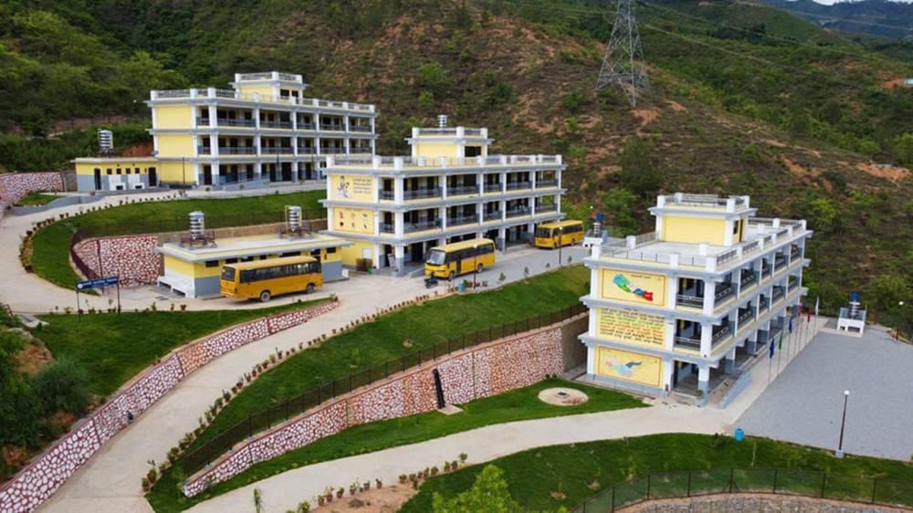

- HISTORY
- PRESTNT
- FUTURE
 Sixty years ago in the hill of khotang,a humble begining took place at Shree Rastriya
secondary school,Baspani .what start just five student and one teacher has grown into a
cherished institution that serves our community today.
In those early days ,there were no modern building .The single classroom was built built
by local hands using natural matarieals bamboo,stone,mud and thatch grass.
There was no goverment funding or financial support of any kind .instead
the people of Baspani come together ,giving theri time ,energy ,and resourse from the
heart,They help each other,believely deeply that education was a gift worth building for their children
future.
Sixty years ago in the hill of khotang,a humble begining took place at Shree Rastriya
secondary school,Baspani .what start just five student and one teacher has grown into a
cherished institution that serves our community today.
In those early days ,there were no modern building .The single classroom was built built
by local hands using natural matarieals bamboo,stone,mud and thatch grass.
There was no goverment funding or financial support of any kind .instead
the people of Baspani come together ,giving theri time ,energy ,and resourse from the
heart,They help each other,believely deeply that education was a gift worth building for their children
future.

From those humble begining, Shree Rastriya secondary, school has grown remarkably.It now serves over 350 students, supported by more than 50 dedicated teacher and a school nurse . the school feathers three modern buildings well equpped with a computer library and science lab,Class run from nursery to ten .student also enjoy a spacious volleyball ground for sports and recreation .what began with bamboo and mud now stands as a well established educational institution ,serving the Baspani comminity wiith pride. The school plan to expand up to Class 12 indroducing computer science and agricultere
we will hire recruit a qualified computer teacher and built a new table tennes ground for
student.These exciting addition will broaden learning oppertunities ,nurture new skill and help
every student grow toward a bright future.
The school plan to expand up to Class 12 indroducing computer science and agricultere
we will hire recruit a qualified computer teacher and built a new table tennes ground for
student.These exciting addition will broaden learning oppertunities ,nurture new skill and help
every student grow toward a bright future.